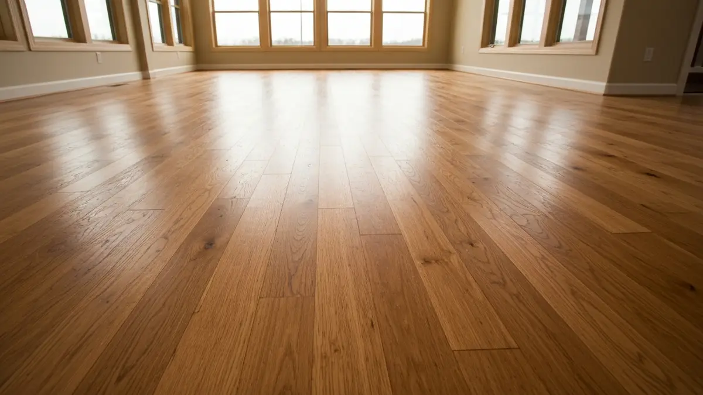

Hardwood Floor Refinishing in Old Nebraska City
Hardwood Floor Installation And Refinishing in Valley
Valley, with its endearing collection of century-old homes, presents a unique canvas for hardwood floor installation and refinishing. Many residences boast original hardwood floors, laden with stories and genuine character, requiring a delicate touch to restore or repair. The fluctuating Nebraska climate, from humid summers to dry, cold winters, can cause expansion and contraction, leading to wear, gaps, or finish degradation over decades. Residents here cherish their homes' historical integrity, seeking professionals who understand the nuance of working with aged wood, or installing new floors that respectfully complement Valley’s distinctive charm, rather than detract from it. This community values authenticity, making expert hardwood services essential for preserving their homes' heart and soul.

Why Valley Residents Choose Elkhorn Hardwood
Elkhorn Hardwood is practically your neighbor, deeply familiar with the unique character and needs of Valley homes. Our proximity allows for swift, responsive service calls, and our team understands the specific historical building practices often found in century-old residences here. We’ve built a reputation among Valley homeowners for our meticulous approach and respect for the community’s heritage, ensuring every project, from a small repair to a complete floor restoration, upholds the integrity and aesthetic of your cherished property.
Our advantage in Valley lies in our specialized expertise with antique and historical hardwoods. We utilize dustless sanding systems, minimizing disruption to your established home, a key consideration for older properties. We're skilled at matching existing wood types and finishes, ensuring repairs blend seamlessly. For new installations, we guide you in selecting materials that enhance, rather than clash with, Valley’s rustic yet refined aesthetic. Our commitment extends to preserving the original character, ensuring your floors continue to tell their unique story for generations.
Our Hardwood Floor Installation And Refinishing Services in Valley
- Hardwood Floor Installation: Whether you're adding new flooring to a recent renovation or extending existing hardwoods, we provide precise installation tailored to Valley's diverse home styles. We meticulously source quality woods that harmonize with the area's aesthetic, ensuring new floors enhance your home's value and character, from modern farmhouse to historic charm.
- Hardwood Floor Refinishing: Breathe new life into your Valley home’s original hardwood floors. Our dustless refinishing process carefully removes years of wear and tear, restoring the natural beauty and warmth. We expertly match stains and finishes to either preserve their historic patina or update them to a contemporary look, all while respecting your home's unique history.
- Hardwood Floor Repair: From addressing water damage near plumbing to replacing cracked or missing planks in older homes, our repair services are essential for Valley properties. We expertly mend imperfections, carefully blending new wood with existing floors to maintain continuity and structural integrity, ensuring seamless results that honor your home's past.
- Custom Staining & Finishing: Give your Valley hardwoods a personalized touch with our custom staining and finishing options. We work closely with you to achieve the perfect shade, enhancing the wood grain to complement your home's interior design, whether you seek to replicate an original historic finish or create a unique, modern statement.
Serving Valley and Surrounding Areas
Elkhorn Hardwood proudly serves the entire Valley community, a charming historical enclave situated directly west of Omaha, offering a peaceful retreat from city life while remaining easily accessible via Highway 275/6. Our service area encompasses all residential streets off Main Street, extending towards the scenic Platte River neighborhoods, and into newer developments sprouting around the city park. We're familiar with areas stretching from the historic downtown core to properties near the Valley Public Library and along West Meigs Street. No matter if you're close to the city limits or nestled deeper within Valley’s quiet lanes, we bring our expertise right to your doorstep.
Frequently Asked Questions About Hardwood Floor Installation And Refinishing in Valley

How much does hardwood floor installation and refinishing cost in Valley?
The cost of hardwood floor services in Valley varies, typically influenced by the size of your historic Valley home, the existing wood type—often oak or maple—and the extent of refinishing or installation required. Projects for a typical 1-2 story home, common here, range based on square footage and necessary repairs. We offer transparent, free estimates to provide precise pricing tailored to your specific Valley property.
How long does hardwood floor installation and refinishing take for a typical Valley home?
For a typical Valley home, hardwood floor refinishing usually takes 3-5 days, considering the average floor area and allowing for proper drying times between coats. New installations might take longer depending on the room count and complexity. We prioritize efficiency with minimal disruption, ensuring your project is completed promptly without compromising our high standards of quality.
Do you serve all of Valley?
Absolutely, Elkhorn Hardwood proudly serves all corners of Valley. Whether your home is nestled in the charming historic district around Main Street, located in the serene residential areas bordering the Platte River, or in the newer developments further out, our team is equipped and ready to bring our expertise directly to your property.
How do you handle the unique character of century-old hardwood floors in Valley?
Our approach to Valley's century-old hardwood floors is rooted in preservation and respect for their inherent history. We employ gentle, precise techniques to restore their original beauty, carefully addressing imperfections while preserving unique patinas and natural wear. Our craftsmen are adept at matching rare wood species and finishes common in older homes, ensuring every repair or refinish enhances, rather than diminishes, the genuine character and historical integrity of your cherished Valley residence.
Ready to schedule your hardwood floor installation and refinishing service in Valley? Call us today or use the contact form above — we serve Valley and all surrounding areas of Omaha/Elkhorn, NE. Most Valley jobs are scheduled within 48-72 hours.